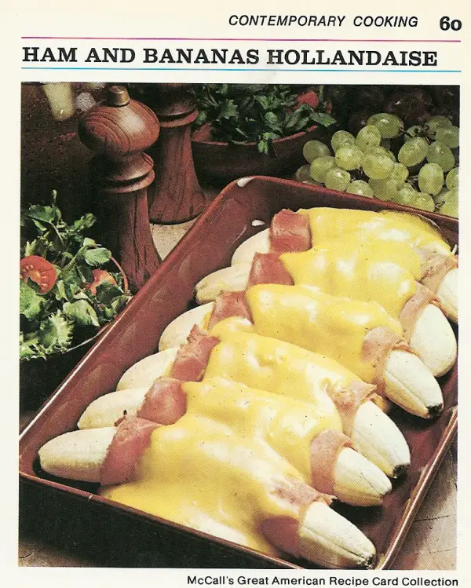

Sweet, Savory Breakfast Delight!

Are you a huge fan of Eggs Benedict, but hate the eggs and enlish muffins? Me too! This simple recipe replaces the worst parts of the classic breakfast dish with bananas. What could go wrong? Keep reading to learn how you can make this dish!
Ingredients
- 1 bunch of bananas
- 1/2 lb of ham deli meat
- 1 cup of hollandaise sauce
Directions
- Peel bananas and place into a dish like a can of old sardines.
- Place ham deli meat upon the bananas, because why not.
- I have no idea how to make hollandaise sause, so hopefully you already have this lying around. Simply poor hollandaise over the top.
- If you still are following along (which you shouldnt be) bake dish at 350 degrees for 5 minutes. Any longer and the bananas will melt into a thick soup.
- Enjoy if possible!
Back to top
Back to home